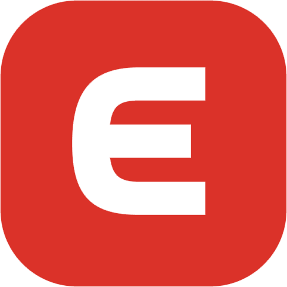
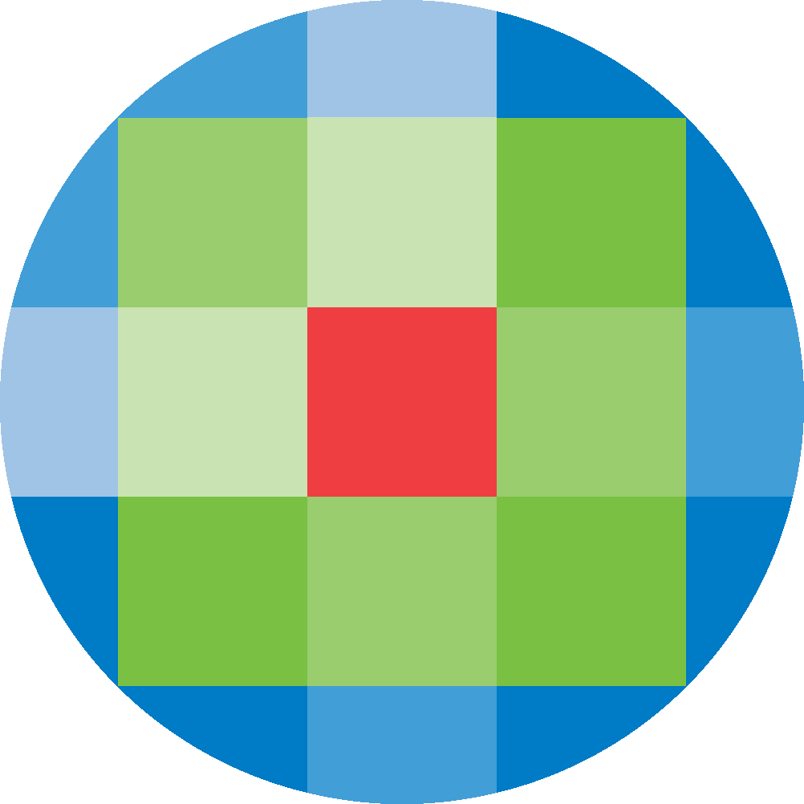
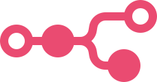

Software waar Synomic dagelijks mee werkt
Staat uw pakket er niet bij? Vrijwel alles met een API of een vaste export laat zich koppelen. Dat wordt vooraf gecontroleerd, voordat er een voorstel ligt.



01
Boekhouding

Moneybird
Moneybird Expert Boekhouding voor zzp en klein mkb. Synomic haalt hier facturen, debiteuren en grootboek uit voor rapportage, en schrijft boekingen terug. Synomic is Moneybird Expert en heeft daardoor korte lijnen met de technische afdeling van Moneybird.Exact Online
Veel gebruikt in het grotere mkb. Geschikt voor projectadministratie en voorraad, met een uitgebreide maar prikkelbare koppeling.Twinfield
Boekhouding die veel administratiekantoren voor hun klanten voeren. Synomic bouwt hier de voorbewerking op zodat aanlevering door klanten gelijkgetrokken wordt.
02
Automatisering en AI
n8n
Het gereedschap waarmee de workflows draaien. Kan op eigen servers staan, zodat uw data binnen uw eigen omgeving blijft.Zapier
Cloudplatform met de breedste connectorbibliotheek. Synomic zet het alleen in voor eenvoudige processen waarbij de locatie van de server niet uitmaakt.
Claude
Het taalmodel waarmee Synomic alle AI-koppelingen bouwt. Gekozen om de betrouwbaarheid op zakelijke tekst en het databeleid.
03
Cloud en data


Microsoft
Power BI, Excel, SharePoint en Outlook. Power BI is meestal de laag waarin de rapportage wordt opgeleverd.De koppeling komt erbij, uw software blijft staan
Synomic bouwt een laag over uw bestaande systemen heen en vervangt niets. De workflows draaien op n8n, dat op uw eigen server kan staan, zodat uw gegevens binnen uw eigen omgeving blijven.
U krijgt bij oplevering de workflows, de toegang en de documentatie. Een andere partij kan het beheer overnemen.
Staat uw pakket er niet bij?
Noem het pakket en wat eruit moet komen. Synomic controleert of er een koppeling op zit.